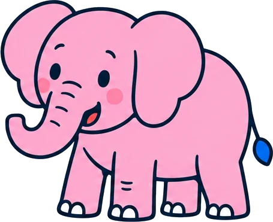

Lang geleden schreef de componist Camille Saint-Saëns muziek over dieren. Elk dier kreeg zijn eigen stukje. Soms hoog en licht, soms laag en zwaar. Soms snel, soms heel langzaam.
Maar welk stukje hoort bij welk dier? Luister goed en raad het!
Druk op Start. Je hoort een stukje muziek. Tik op het dier dat erbij hoort. Heb je het goed, dan danst het dier mee en zie je welk instrument er speelt. Daarna verdwijnt het, en zijn er steeds minder dieren over.
Muziek: Le Carnaval des animaux van Camille Saint-Saëns, gespeeld door Neal en Nancy O'Doan (piano's) en het Seattle Youth Symphony onder leiding van Vilem Sokol. Uit de Al Goldstein-collectie via Wikimedia Commons, onder de licentie CC BY-SA 2.0. De fragmenten van dertig seconden zijn daaruit geknipt en vallen onder dezelfde licentie.